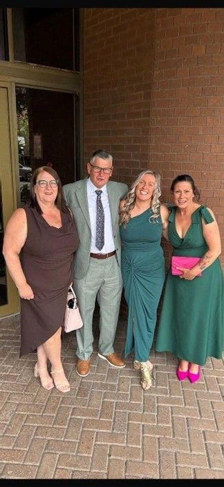

Drummohr named best campsite in Scotland
Our Drummohr Camping and Glamping Site at Musselburgh was named Camping Site of the Year in the 2025 Scottish Hospitality Awards. This latest success follows two national awards last year when it was voted Campsite of the Year in the Camping Awards 2024 and also named the best in Scotland by online travel agent Pitchup.com.
Angie Purves, who is the Site Manager at Drummohr, said: “We are absolutely delighted to have won this award which reflects the team’s passion and dedication to creating a brilliant place for people to come and enjoy a holiday. The depth and range of the shortlisted businesses in these awards demonstrates the strength of tourism and hospitality in Scotland and we’re very proud to be part of that. Working in the tourism industry, it’s important to work closely with other local businesses in the sector and we actively promote nearby attractions, events and venues to our guests. I think providing that extra level of service across everything we do is what makes Drummohr such a special place to visit.”
The Scottish Hospitality Awards aim to highlight and celebrate excellence in Scotland’s hospitality industry and focus on recognising outstanding businesses and individuals. The winners of the eighth annual awards were announced on Wednesday, June 18 at a black-tie event held at the Glasgow Marriott Hotel.
In her supporting evidence for Drummohr’s submission to the awards, Jo Ritzema, Executive Chair, praised the team’s commitment to an exceptional guest experience, with feedback always being personally responded to and regularly implemented, as well as the team’s support for the five-star vision when the site was acquired by WCF in 2021. This involved every team member going above and beyond their normal duties.

Press Links